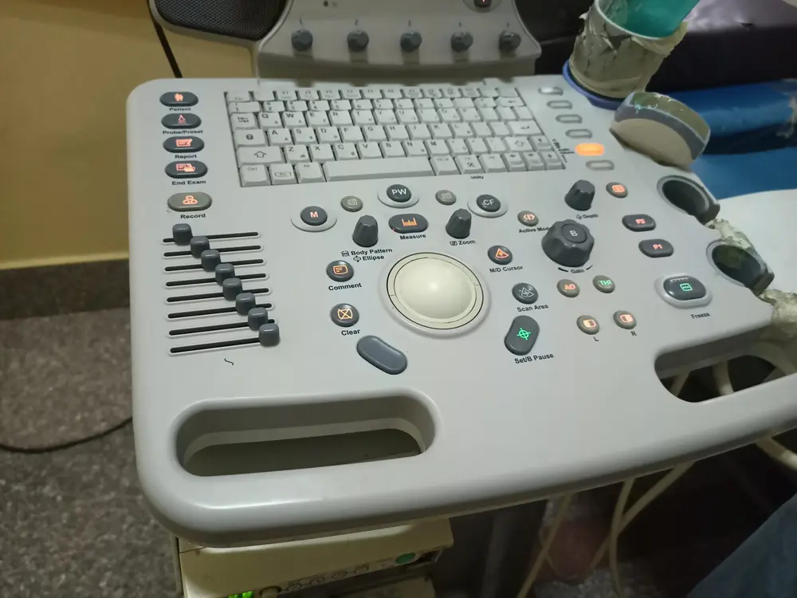
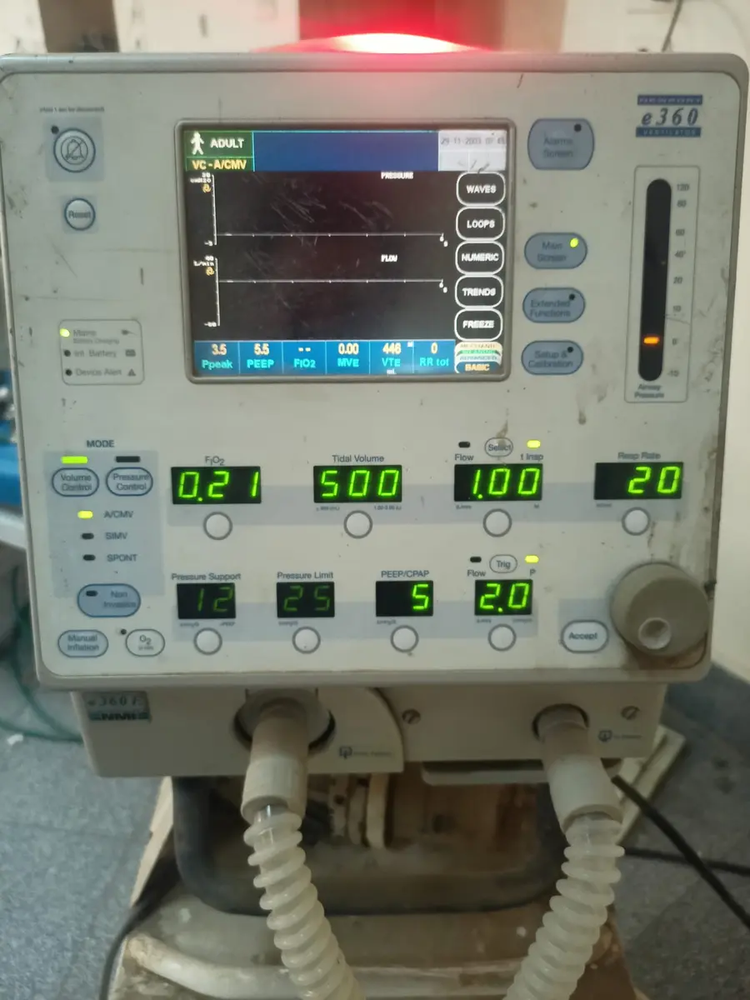
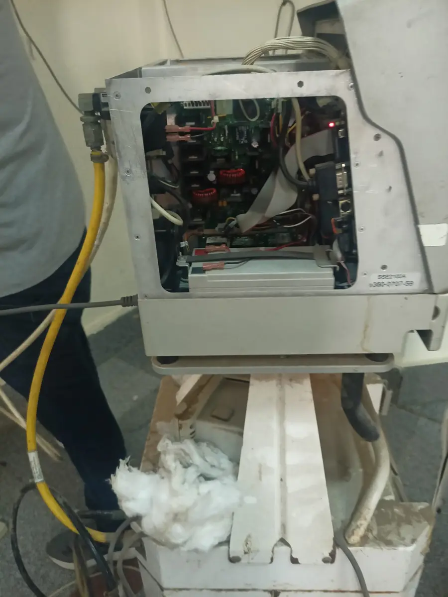
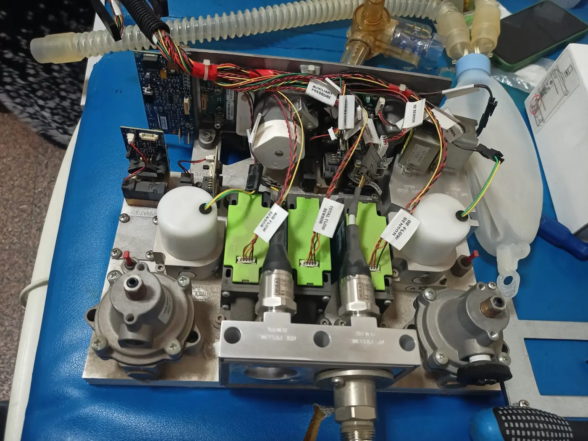
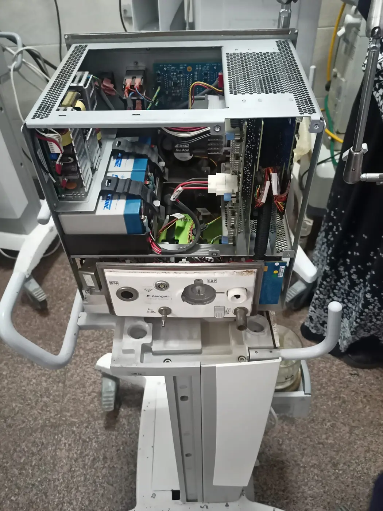
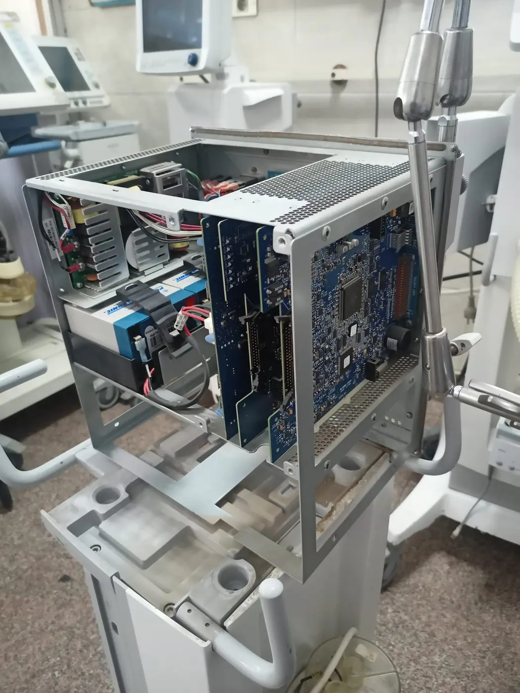

I look for readiness, alarms, sensors, power, calibration, documentation, and the clinical consequence of failure.
Biomedical engineer · systems thinker · global learner
AboubakrIbrahim
Clinical systems · Medical-device quality · Healthcare data
I connect the physical and digital layers of safer healthcare.
From equipment reliability and ISO 13485 thinking to MATLAB, biomedical signals, and clinical-data research, I bring uncommon technical range to one clear purpose: making healthcare technology more dependable and understandable.
01Clinical experienceEgypt + Türkiye
02Quality foundationISO 13485 + Fluke
03Engineering labMATLAB + signals
Available for international roles, relocation, field travel, and research collaboration
AB / SYSTEM DIRECTORY
One biomedical platform. Connected evidence.
Select a module to enter the part of my professional system most relevant to your work.
01⌁
Clinical SystemsEquipment · hospital workflow · reliability
OPEN ↗
02◉Medical ImagingCT · MRI · X-ray · ultrasound
OPEN ↗
03∿Healthcare IntelligenceAI · data · sepsis · ICU research
OPEN ↗
04ϟBiomedical SignalsECG · HRV · QRS · STFT
OPEN ↗
05◇Device QualityISO 13485 · QMS · audit · safety
OPEN ↗
06✓Credentials VaultCertificates · CV · recommendations
OPEN ↗
07＋CollaborationEmployment · research · technical work
OPEN ↗
More than a job title
Curiosity gave me range. Biomedical engineering gave it purpose.
I learn across disciplines because healthcare problems rarely stay inside one box. If your team needs someone who can understand the device, document the process, interrogate the data, and communicate across cultures, this is the combination I bring.
How my range becomes useful
Flexibility is not “I can do anything.” It is the ability to enter a new problem, learn fast, and connect what others keep separate.
I build reproducible MATLAB workflows, question leakage and missingness, and report limitations as carefully as results.
I connect technical work with ISO 13485, audits, CAPA, traceability, electrical safety, and responsible evidence.
Experience in Egypt and Türkiye, exposure to Saudi Arabia, and Arabic, English, and Turkish strengthen how I adapt and communicate.
01
Keep systems dependable
Supervised experience across critical-care, surgical, imaging, and radiography environments.
- Inspection & functional checks
- Preventive-maintenance support
- Fault investigation & documentation
02
Turn signals into evidence
Reproducible MATLAB research spanning ICU data, ECG, HRV, QRS detection, and STFT workflows.
- Biomedical signal processing
- Leakage-aware model evaluation
- Transparent limitations & testing
03
Build quality into the work
Training in ISO 13485, internal auditing, electrical safety, QMS, CAPA, and device QA.
- Quality-system foundations
- Risk, audit & document control
- Patient-safety mindset
“I went in thinking my job was to fix devices. I came out understanding something deeper: every calibration, sensor test, and maintenance report represents a patient depending on it.”
B.S. Biomedical Engineering
2 Documented internships
5 Public technical repositories
3 Languages
Education record
Bachelor of Science in Biomedical Engineering
Işık University · English-taught program · Istanbul, Türkiye
Documented engineering experience
Evidence from environments where reliability cannot be optional.
Evidence-backed internship experience in Egypt and Türkiye, described with the right boundary: assisted, supported, participated, and learned under engineering supervision.
Cairo · Egypt
Clinical Engineering Intern
Cairo University Hospitals
Hospital-based experience across ICU, CCU, emergency, operating-room, and imaging departments.
Verified contribution details
- Assisted with inspection, troubleshooting, maintenance, and functional checks.
- Supported GE CARESCAPE R860 airflow and pressure-sensor fault investigation.
- Supported CT checks, ultrasound-probe assessment, and operating-table battery replacement.
- Observed equipment installation and clinical training workflows.
Istanbul · Türkiye
X-Ray & Radiology Systems Intern
EKOL Tıbbi Ürünler A.Ş.
Technical-service experience focused on X-ray equipment, radiography principles, hospital visits, and service workflows.
Verified contribution details
- Assisted engineers during hospital service visits.
- Supported investigation of movement sensors, safety brakes, fuses, boards, and positioning systems.
- Participated in functional verification, recalibration, component replacement, and reassembly.
- Supported service documentation, spare-parts review, and equipment-status tracking.
Selected field evidence
Five systems. One engineering responsibility.
Privacy-screened photographs from supervised internship activities. They document equipment exposure and learning context; they do not imply independent clinical authorization or manufacturer certification.








Work you can inspect
Methods, code, limitations, and results—not unsupported claims.
Each repository separates demonstrated implementation from unverified performance. The goal is credible engineering evidence—not impressive numbers without methodological support.
Primary graduation projectMATLAB · MIMIC-III Demo
Early Sepsis Risk Detection
A repaired first-24-hour research framework for admission-level sepsis risk exploration, with diagnosis-derived labels, patient-level validation, training-only preprocessing, and transparent limitations.
Clinical data→24h window→Patient split→Model review
- Logistic Regression and Random Forest baselines
- Patient-level fold separation and missingness reporting
- Original prototype preserved as historical V1
Biomedical signals01
QRS Detection Comparison
Pan–Tompkins-style and wavelet detectors with one-to-one annotation matching, tolerance-aware evaluation, and record-level summaries.
MATLABECGWavelets
View project ↗
Biomedical signals02
ECG & HRV Toolkit
Artifact-aware RR handling, time and frequency metrics, Poincaré analysis, batch reporting, and five-minute frequency safeguards.
HRVSignal processingQC
View project ↗
Deep signal research03
CNN–STFT Audio Denoising
Recording-separated CNN mask estimation, exact-length ISTFT reconstruction, a spectral-subtraction baseline, and QC artifacts.
CNNSTFTAudio
View project ↗
Critical-care ML04
ICU Mortality Modeling
A 24-hour framework replacing simulated and post-outcome features with patient separation, interpretable baselines, and calibration.
Clinical MLCalibrationSafety
View project ↗
Supporting projects were paid or voluntary MATLAB/research contributions used to expand technical capability. They are not presented as additional graduation projects or clinically validated products.
Quality mindset
Reliability is engineered.
Responsibility is proven.
My quality training strengthens the way I approach both equipment and data: define the intended use, inspect systematically, document clearly, verify results, and never make claims beyond the evidence.
01
Medical-device QMSISO 13485 foundations, internal auditing, CAPA, and document control.
02
Equipment assuranceFunctional checks, electrical-safety awareness, calibration verification, and traceability.
03
Responsible researchLeakage prevention, privacy, reproducibility, limitations, and reviewed reporting.
Selected credentials
Training chosen to strengthen the work—not decorate the profile.
Start with the credentials that matter most for clinical engineering, field service, quality, and patient safety. Expand the supporting pathways when a role requires broader evidence.
Supporting evidenceExplore additional learning pathways+
Healthcare data & interoperability
- Healthcare Data Solutions Overview · Microsoft Learn
- Azure Health Data Services learning · Microsoft Learn
- AI and data foundations supporting healthcare research
Security & compliance
- HIPAA Awareness Training
- IoT Security Assessment foundations
- Cybersecurity awareness learning pathway
QMS tools & improvement
- CAPAs Tool · Scilife Academy
- Documents Tool · Scilife Academy
- Audit-tool learning pathway · Scilife Academy
Microsoft Learn items are presented accurately as learning achievements—not as official Microsoft professional certifications.
Some credentials use shortened variations of my complete legal name. Credential images are shown as issued and are never edited to change identity information.
Capabilities your team can use
Broad technical range. One clear biomedical center.
Clinical equipment
VentilatorsPatient monitorsDefibrillatorsAnesthesiaInfusion pumpsUltrasoundCT systemsX-ray
Service & quality
Preventive maintenanceFunctional testingFault investigationISO 13485QMSAuditCAPADocumentation
Data, software & signals
MATLAB is the strongest publicly demonstrated programming identity; the wider stack supports analysis, prototypes, automation, and continued development.
MATLABPythonSQLTensorFlowPower BIPython automationECGHRVQRS detectionSTFTWaveletsMachine learningMIMIC-III
Professional
Technical communicationResearchCritical thinkingFast learningAdaptabilityTeamworkArabicEnglishTurkish
Academic recommendations
How I work—seen by the people who taught me.
Two academic perspectives reinforce the qualities behind the technical evidence: research curiosity, organization, collaboration, fast learning, and responsible execution.
Aboubakr demonstrated a strong passion for scientific research and technical innovation.
The recommendation highlights independent work, critical thinking, data interpretation, documentation, presentation, curiosity, and a responsible research foundation.
He is a fast learner and able to apply his learnings to real life.
Professor Çepni also describes Aboubakr as organized, time-conscious, collaborative, well-mannered, and a positive addition to an organization.
Role-aligned CV system
One verified career story. Four targeted CVs.
Start with the main public CV for a complete overview. For a specific vacancy, choose the version aligned to the work your team needs.
Start a conversation
Hiring for reliability, quality, applications, or biomedical data?
Bring me the role, the technical problem, or the learning curve. I bring a verified biomedical foundation, disciplined curiosity, international adaptability, and the drive to become useful quickly.
BaseIstanbul, Türkiye
MobilityOpen to global relocation
TravelAvailable for field-service travel
LanguagesArabic · English · Turkish